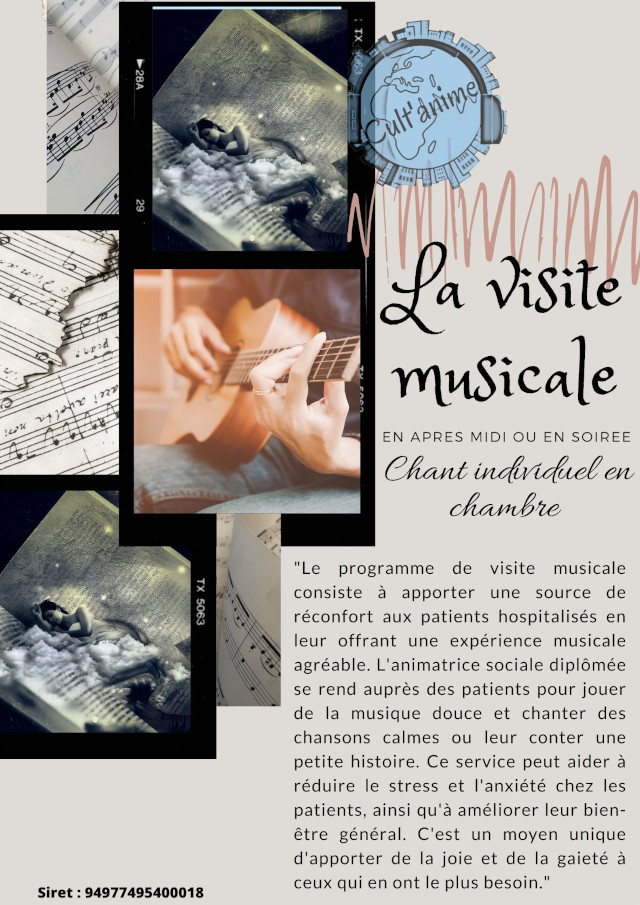

Les visites musicales de Cult'anime sont une expérience unique pour les résidents d'établissements de santé, de maisons de retraite ou de tout autre lieu de vie. Notre animatrice se déplace avec sa guitare et son répertoire de chansons douces pour proposer des moments d'apaisement aux personnes qui en ont besoin. Elle peut également se rendre dans les chambres des résidents qui ne peuvent plus ou ne désirent plus en sortir.
Chez Cult'anime, nous sommes convaincus que la musique est un outil thérapeutique puissant qui peut aider à apaiser les angoisses, les douleurs et les difficultés d'endormissement. Nos visites musicales sont conçues pour offrir un moment de détente et de réconfort à tous ceux qui en ont besoin.
Notre animatrice a une expérience chorale au conservatoire et peut s'adapter à tous les publics, quelle que soit leur condition physique ou leur âge. En cas de besoin, elle peut également proposer des petites histoires à conter pour divertir et émerveiller son public. Pour tous les goûts et toutes les occasions, il existe même des contes personnalisés au prénom du ou de la résident(e) pour son anniversaire.
Contactez-nous dès maintenant pour organiser une tournée de visites musicales dans votre établissement. Nous serons ravis de vous aider à offrir des moments de bien-être à vos résidents.
